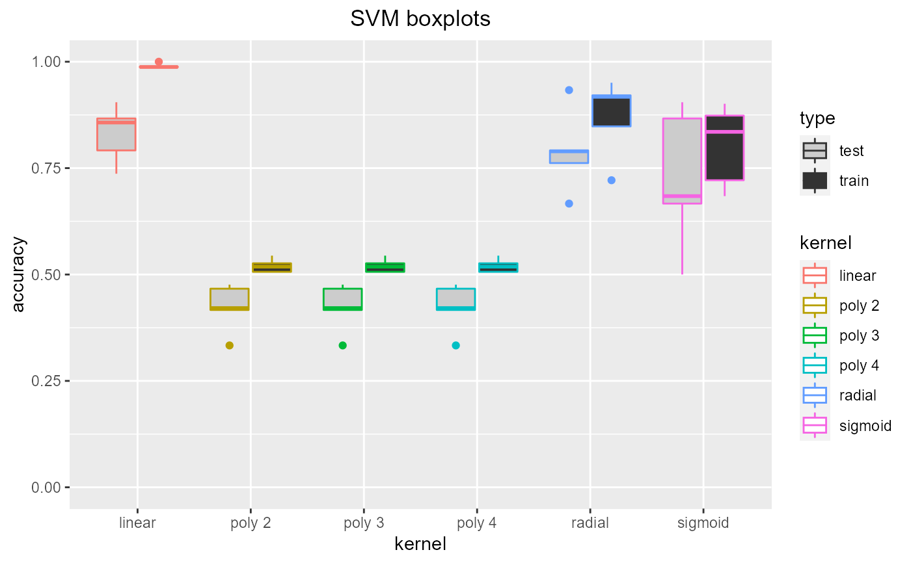
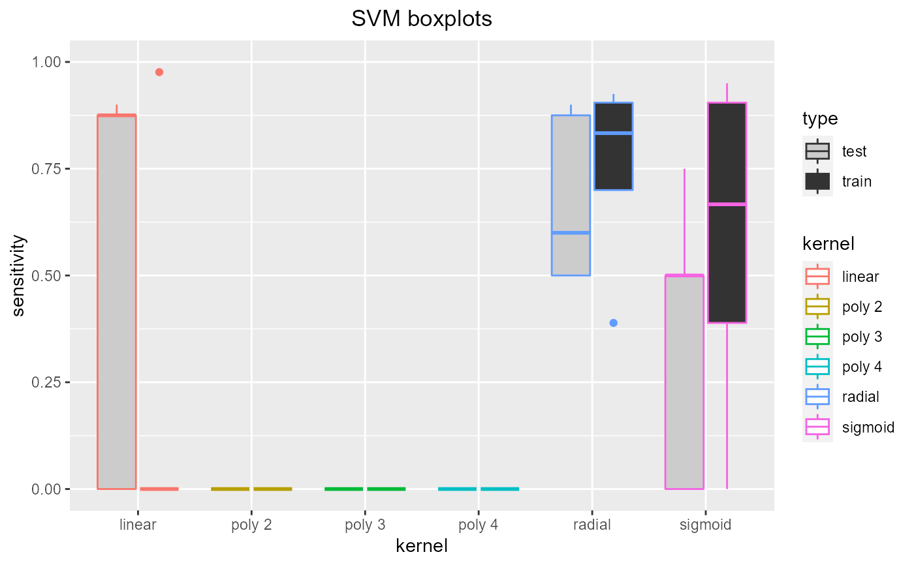
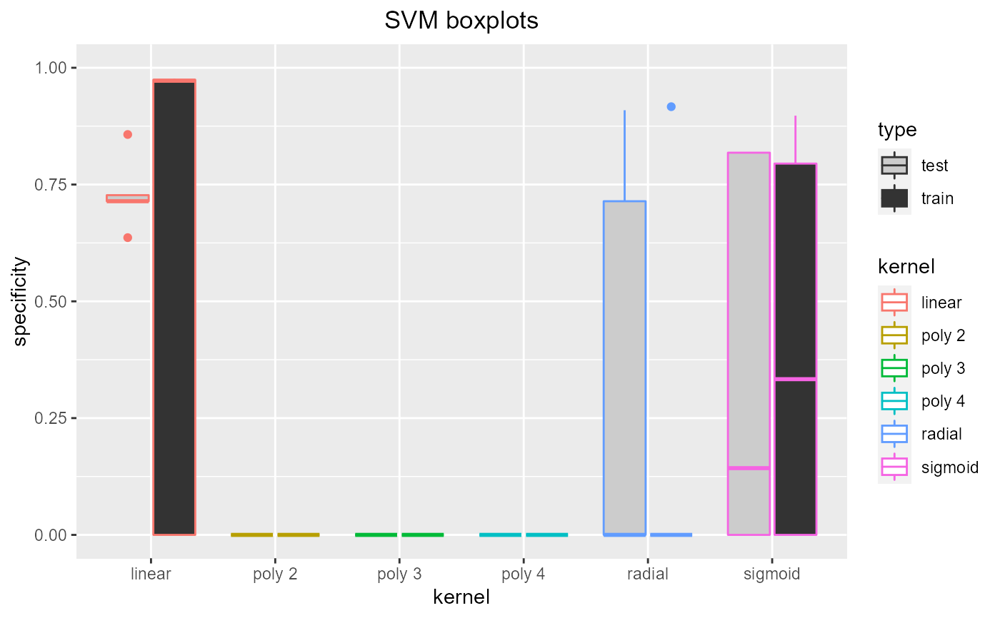

selectsvmkernel.RdTuning SVM kernel. Trains SVMs with a range of kernels (linear, polynomial degree 2, 3 and 4, radial and sigmoid) using cross validation so the optimal kernel can be chosen (using the resulting plots). If specified (by showplots=F) the plots are saved as jpegs.
selectsvmkernel(data, title, showplots = T, output_prefix = "")
| data | Dataset: dataframe containing classification column and all other column features. Both the training and test datasets will be taken from this dataset. |
|---|---|
| title | Title to be used for the resulting boxplot |
| showplots | T if plots should be shown in standard output, F is plots should be saved as jpg files. |
| output_prefix | Prefix used for saving plots. If showplots==F then plots are saved here. Otherwise, standard output. |
Dataframe containing test and training accuracy, sensitivity and specificity
data = read.csv(paste(system.file('samples/subsamples', package = "feamiR"),'/sample0.csv',sep='')) data = rbind(head(data,50),tail(data,50)) data$classification = as.factor(data$classification) data = data[,2:ncol(data)] selectsvmkernel(data,'SVM boxplots')#> kernel accuracy sensitivity specificity type #> 1 linear 0.8571429 0.0000000 0.7272727 test #> 2 linear 1.0000000 0.0000000 0.0000000 train #> 3 radial 0.7619048 0.6000000 0.9090909 test #> 4 radial 0.8481013 0.7000000 0.0000000 train #> 5 sigmoid 0.9047619 0.0000000 0.8181818 test #> 6 sigmoid 0.8734177 0.9500000 0.7948718 train #> 7 poly 2 0.4761905 0.0000000 0.0000000 test #> 8 poly 2 0.5063291 0.0000000 0.0000000 train #> 9 poly 3 0.4761905 0.0000000 0.0000000 test #> 10 poly 3 0.5063291 0.0000000 0.0000000 train #> 11 poly 4 0.4761905 0.0000000 0.0000000 test #> 12 poly 4 0.5063291 0.0000000 0.0000000 train #> 13 linear 0.9047619 0.0000000 0.7142857 test #> 14 linear 0.9873418 0.0000000 0.9767442 train #> 15 radial 0.6666667 0.5000000 0.0000000 test #> 16 radial 0.7215190 0.3888889 0.0000000 train #> 17 sigmoid 0.6666667 0.5000000 0.0000000 test #> 18 sigmoid 0.7215190 0.3888889 0.0000000 train #> 19 poly 2 0.3333333 0.0000000 0.0000000 test #> 20 poly 2 0.5443038 0.0000000 0.0000000 train #> 21 poly 3 0.3333333 0.0000000 0.0000000 test #> 22 poly 3 0.5443038 0.0000000 0.0000000 train #> 23 poly 4 0.3333333 0.0000000 0.0000000 test #> 24 poly 4 0.5443038 0.0000000 0.0000000 train #> 25 linear 0.8666667 0.8750000 0.8571429 test #> 26 linear 0.9882353 0.9761905 0.0000000 train #> 27 radial 0.9333333 0.8750000 0.0000000 test #> 28 radial 0.9176471 0.8333333 0.0000000 train #> 29 sigmoid 0.8666667 0.7500000 0.0000000 test #> 30 sigmoid 0.8352941 0.6666667 0.0000000 train #> 31 poly 2 0.4666667 0.0000000 0.0000000 test #> 32 poly 2 0.5058824 0.0000000 0.0000000 train #> 33 poly 3 0.4666667 0.0000000 0.0000000 test #> 34 poly 3 0.5058824 0.0000000 0.0000000 train #> 35 poly 4 0.4666667 0.0000000 0.0000000 test #> 36 poly 4 0.5058824 0.0000000 0.0000000 train #> 37 linear 0.7916667 0.9000000 0.7142857 test #> 38 linear 0.9868421 0.0000000 0.9722222 train #> 39 radial 0.7916667 0.9000000 0.7142857 test #> 40 radial 0.9210526 0.9250000 0.9166667 train #> 41 sigmoid 0.5000000 0.0000000 0.1428571 test #> 42 sigmoid 0.6842105 0.0000000 0.3333333 train #> 43 poly 2 0.4166667 0.0000000 0.0000000 test #> 44 poly 2 0.5263158 0.0000000 0.0000000 train #> 45 poly 3 0.4166667 0.0000000 0.0000000 test #> 46 poly 3 0.5263158 0.0000000 0.0000000 train #> 47 poly 4 0.4166667 0.0000000 0.0000000 test #> 48 poly 4 0.5263158 0.0000000 0.0000000 train #> 49 linear 0.7368421 0.8750000 0.6363636 test #> 50 linear 0.9876543 0.0000000 0.9743590 train #> 51 radial 0.7894737 0.5000000 0.0000000 test #> 52 radial 0.9506173 0.9047619 0.0000000 train #> 53 sigmoid 0.6842105 0.5000000 0.8181818 test #> 54 sigmoid 0.9012346 0.9047619 0.8974359 train #> 55 poly 2 0.4210526 0.0000000 0.0000000 test #> 56 poly 2 0.5185185 0.0000000 0.0000000 train #> 57 poly 3 0.4210526 0.0000000 0.0000000 test #> 58 poly 3 0.5185185 0.0000000 0.0000000 train #> 59 poly 4 0.4210526 0.0000000 0.0000000 test #> 60 poly 4 0.5185185 0.0000000 0.0000000 train